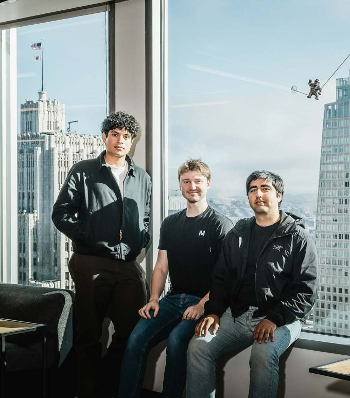

לא יודע אם שמעתם עליהם אבל יש שלושה יזמים בני 22(!) שנהיו מליארדרים בשנתיים האחרונות:
פורסם במקור ב LinkedIn
לא יודע אם שמעתם עליהם אבל יש שלושה יזמים בני 22(!) שנהיו מליארדרים בשנתיים האחרונות:
חברת Mercor היא סטארט-אפ אמריקאי בתחום הבינה המלאכותית, שנוסד ב-2023 על ידי שלושה חברים מה-Bay Area: Brendan Foody, Adarsh Hiremath ו-Surya Midha.
החברה התחילה ככלי גיוס כוח אדם, שמחבר מפתחים מהודו עם חברות בארצות הברית באמצעות כלים מבוססי AI.
בהמשך היא ביצעה שינוי כיוון משמעותי - היום היא מספקת ללקוחותיה מומחים אנושיים שמאמנים, מסווגים ומעריכים מערכות AI מתקדמות, כולל מודלים של OpenAI ו-Anthropic. המומחים מגיעים מתחומים מקצועיים מגוונים, ותורמים לשיפור ביצועים של מודלים בשפה, טכנולוגיה וידע נישתי.
הצמיחה של החברה מהירה במיוחד. בסוף 2025 היא גייסה סבב C בהיקף של כ-350 מיליון דולר לפי שווי של כ-10 מיליארד דולר. מהלך זה הפך את שלושת המייסדים, כולם סביב גיל 22, *למיליארדרים העצמיים הצעירים ביותר בהיסטוריה*!!
Mercor פועלת מסן פרנסיסקו, ומתבססת על שילוב של כוח אדם מקצועי וטכנולוגיית AI כדי לתת מענה לביקוש ההולך וגדל לנתונים איכותיים ולהערות אנושיות בתהליכי אימון של מערכות בינה מלאכותית.
על פי נתוני Crunchbase, בשנת 2025 הוזרמו יותר מ-200 מיליארד דולר לסטארטאפים בתחום ה-AI. זה כמעט חצי מכלל ההשקעות הגלובליות בהון סיכון!
תקופה משוגעת להיות בה, ולהיות בה יזם
